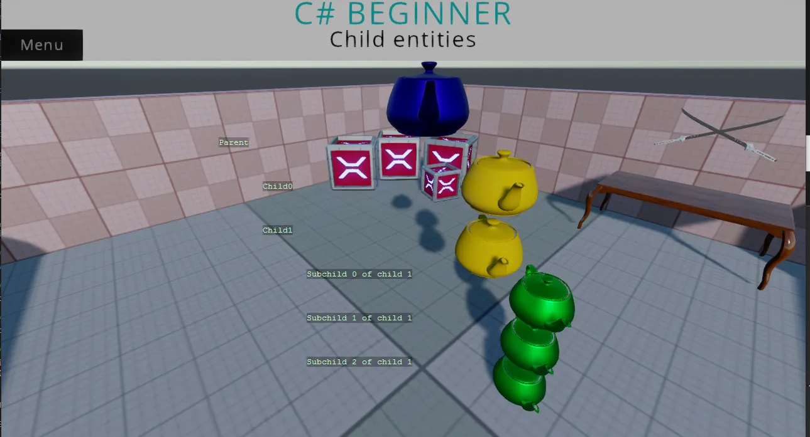

Children of entities
You can find this sample in the tutorial project: Menu → Child entities
Explanation
This C# basics tutorial covers how to get an entities children.
Since those children are also entities, we can retrieve their children too.

Code
using Stride.Core.Mathematics;
using Stride.Engine;
namespace CSharpBeginner.Code
{
/// <summary>
/// This script is used to demonstrate how we can get child entities of an entity
/// <para>
/// https://doc.stride3d.net/latest/en/tutorials/csharpbeginner/child-entities.html
/// </para>
/// </summary>
public class ChildEntitiesDemo : SyncScript
{
private Entity child0;
private Entity child1;
public override void Start()
{
// We can get a child by using GetChild(). This takes an index number starting at 0
child0 = Entity.GetChild(0);
child1 = Entity.GetChild(1);
// If we would try to get Child 3 (which doesn't exist), we would get an exception
// var nonExistingChild = Entity.GetChild(2);
}
public override void Update()
{
// We store some drawing positions
int drawX = 350, drawY = 230, increment = 70;
// We print the name of the our entity
DebugText.Print(Entity.Name, new Int2(drawX, drawY));
// We loop over all the children of our entity using GetChildren()
// NOTE: This does not include any subchildren of those children
foreach (var child in Entity.GetChildren())
{
// We print the name of the child
drawY += increment;
DebugText.Print(child.Name, new Int2(drawX + increment, drawY));
// It is possible that this child, also has children. We now loop over these 'subchildren' and print their name too
foreach (var subChild in child.GetChildren())
{
drawY += increment;
DebugText.Print(subChild.Name, new Int2(drawX + (increment * 2), drawY));
}
}
}
}
}